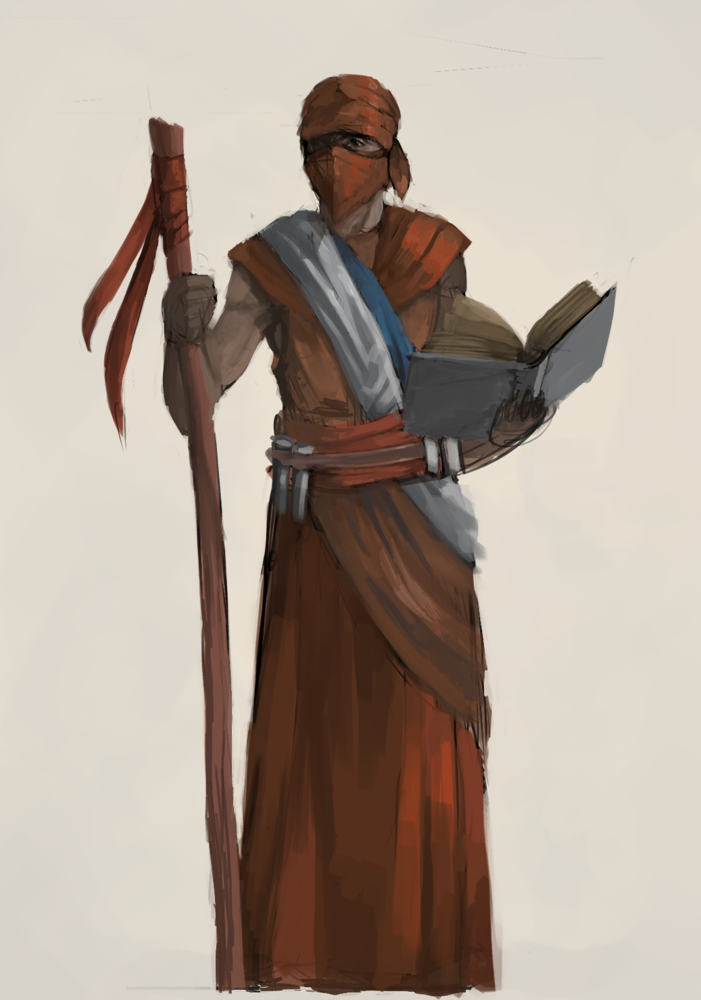
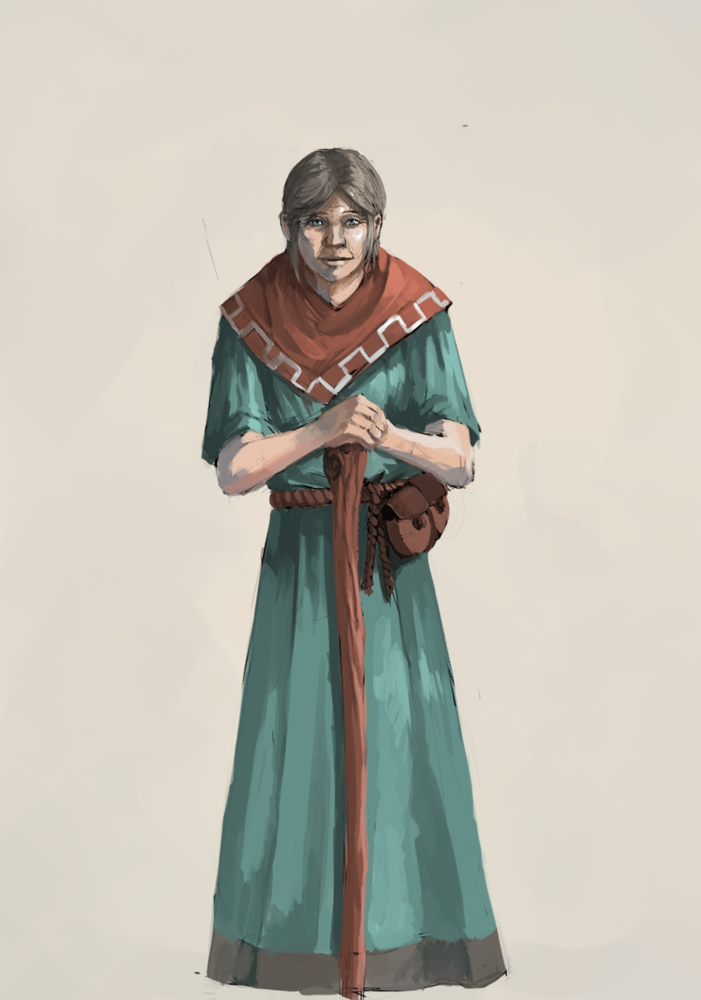
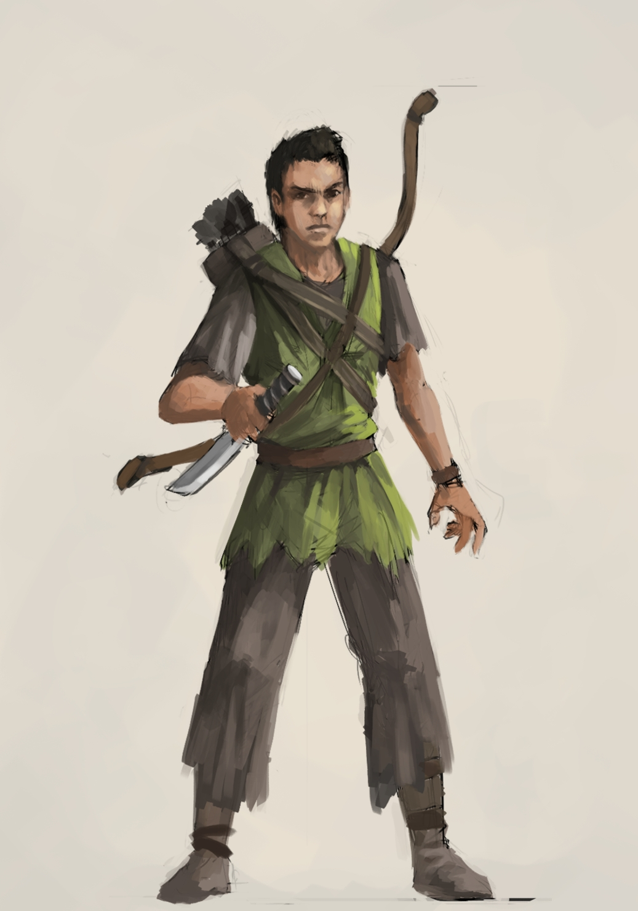
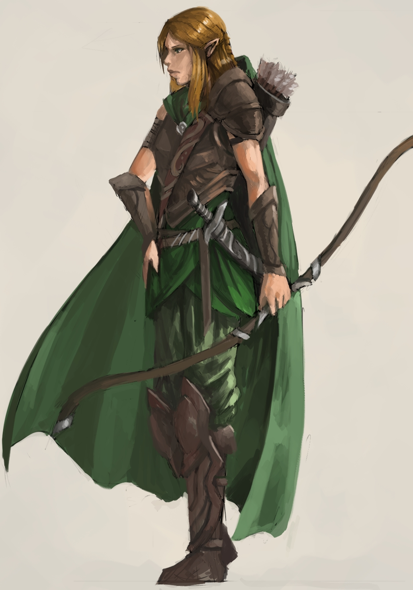
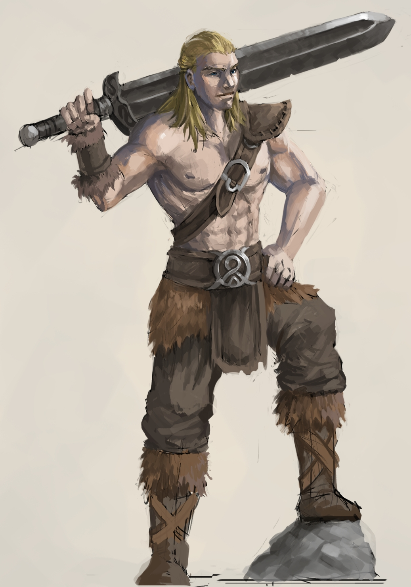

BLANK CHARACTER SHEET
Steps to copy a sheet
- Click on the button. It should create an editable copy. If not, follow from step 2 instead.
- Open the original example sheet with the button below.
(Right-click the button and choose open in new tab).
- Click on "File", then "Make a Copy".
- Open the Copy in your google drive/sheets and edit to your hearts desire.
- (Optional) Remove all current texts and save as a pdf version and/or print out a physical copy.
PREMADE CHARACTER SHEETS
These premade characters were created by the very first testers to finish a full avorkarth campaign. Their characters shall be always remembered. (Their sheets are currently being remade with the few changes I did since they played.)
Istmun Dain
|  | A sharassian scholar and follower of the word of Hektah, keeper of knowledge, Istmun has long poured through the many tomes and volumes of the many libraries of his god. Naturally curious, Istmun had found himself often in studies for nights on end, barely sustaining himself. It was only so long before he had exhausted all that he could learn from the written word of his city. So it was that he travelled the dunes, stopping within any establishment and quietly asking of the local myths and mysteries. Still this was not enough and Istmun decided that the true knowledge that Hektah wished for him to find would not be simply in one land, but in all of them. Istmun shrugged, nodded to himself and adjusted his journey to follow northern stars, determined to learn next what was the knowledge kept by the lighter skinned Karthians. |
Mable of Kordarr
Mable and her husband Sam were a pair of ordinary karthian crafstmen living within the kingdom of Kordarr. They sold their merchandise well and lived a comfortable life, kind and gentle souls both. They may have exagerrated a thing here or there, but what great merchant doesn't play up their products? So it was, until Sam passed away of old age. Mable grieved, but found that she felt at her best when continuing their work. "Shouldn't you retire?", others said. Mable would nod with a smile, but keep on working. One day, she simply packed up her most precious belongings and journeyed out into the realm to see what she could do to keep busy in her last years of life, and what souls she would be able to share tales with. |
 |
Sarless Equinta
|  | The son of escaped Tildran slaves, Sarless was raised almost entirely in the wilderness. Fearing for retribution and the penalty of death awaiting escaped slaves, his parents refused to return to civilization, trying their best to head west towards the remaining free Tildran tribes. Unfortunately, their ill health took hold of their lives and they passed when Sarless was naught but a young man. Since then, Sarless has kept practicing what little his father taught him of keeping himself alive through the hunt. Yet living in woodlands is no easy task and both curiosity and the fatigue of the wilds were beginning to get the better of him. Perhaps it was time for a journey outside the woods and to return to the few memories he had of civilization. |
Velarae Dewblossom
The proud daughter of the Sanguinnar nation, Velarae is devoted to the Eternal King and his eventual return. Showing great promise in her youth, she was brought into the house of Sinathen, those of her kind that roam the realm outside the golden glades as the hidden eyes, ears and if need be, blade of the Sanguinnar. Due to the ignorance of humans of aelven variations, she learnt to emulate the Narei, and will answer as one of their kind, although the pride and arrogance over lesser races of the sanguinnar are wont to appear should she be in a foul mood. She hides beneath cloak and hood always and has changed her name many times over the decades, as well as her appearance, but she always remains true to her singular mission. |
 |
Youldyr Rabbansson
|  | According to Youl, as he calls himself, Youldyr is the greatest hero and warrior that his clan has ever produced. In truth, Youldyr does indeed have a great warrior's strength and stamina, but as he would learn, too tender a heart. Once, when hunting alongside his elder sister and a few clanmates, they were waylaid by karthian bandits. Youl was proud, for he had saved his friend's arm as well as having fought off a single bandit. Grinning, as the hero he was, he turned only to see his sister in a berserker's rage finishing off her eigth bandit in a bloody rampage. For some reason, his heart sunk at the sight. He was told by his clan that he was better suited to be a tenderer, a caregiver or crafstman given his gentle nature. "Bah", he said to the elders! "Fah!", he cried out to his father! He said nothing to his nana, because she was lovely and he couldn't bring himself to insult her. Still he craved the hero's worship his sister had, and so he snuck out in the night, stealing one of his father's swords to adventure onwards and prove his overwhelming manliness! |